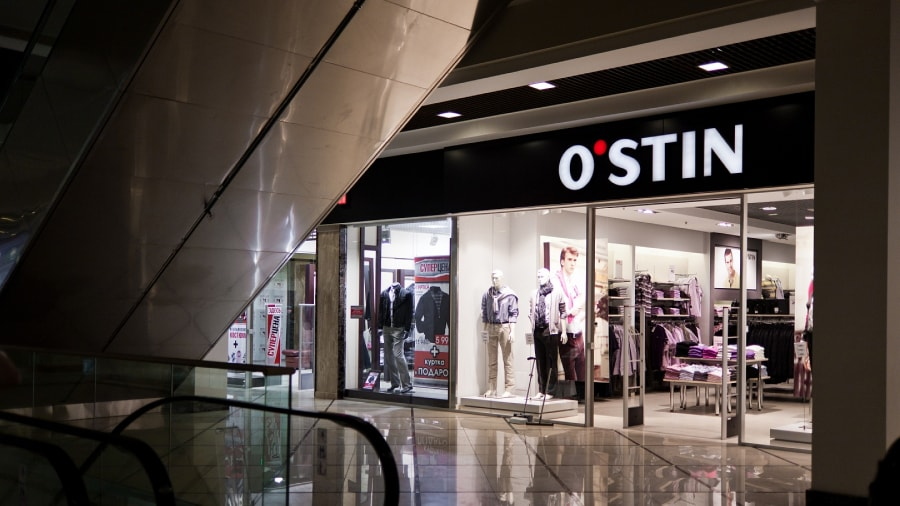

С сентября 2010 года успешно работает первый в Колпинском районе г. Санкт-Петербурга торгово-развлекательный комплекс европейского класса, отвечающий современным тенденциям на рынке торговой недвижимости.
h2 title
h3 title
h4 title
h5 title
Торговый комплекс представляет собой центральный пассаж с торговыми площадями, расположенными по обе стороны от него, с общей площадью 23 400 кв.м.
Центральная галерея выполнена со вторым светом и стеклянным куполом на уровне третьего этажа. Фасад торгового комплекса представляет собой витраж с зонами для рекламоносителей.
Проект торгового комплекса создан в соответствии с последними тенденциями в архитектуре и дизайне, неоднократно экспонировался на международных инвестиционно-строительных выставках (ExpoReal, Barcelona Meeting Point, MIPIM) в составе официальной делегации Санкт-Петербурга и был высоко оценен экспертным сообществом.
Центральные галереи 1, 2, 3 и 4 этажей объединены эскалаторами и лифтами.
Актуальность строительства комплекса «Меркурий» была обусловлена отсутствием до настоящего момента в Колпинском районе современных торговых комплексов. В районе прослеживается дефицит качественных и современно оборудованных торговых площадей.
Проект ТРК «Меркурий» создан с учетом высокотехнологичных и новейших разработок, использующихся для строительства современных торговых центров. Актуальный дизайн, качественные материалы отделки и новые инженерные технологии соответствуют сегодняшним требованиям, предъявляемым к объектам на рынке торговой недвижимости.
Современный формат ТРК «Меркурий», его техническое оснащение, а также разработанная концепция по составу арендаторов, позволяют разместить на торговых площадях комплекса магазины с известными и популярными брендами пользующимися стабильным и высоким спросом из-за своей востребованности, качества и доступной цены.
ТРК «Меркурий» расположен в историческом центре города Колпино на пересечении улиц Веры Слуцкой и Пролетарской. Он окружен большим жилым массивом и пользуется популярностью, как среди жителей близлежащих домов, так и населения всего района, которое составляет около 190 тысяч человек.
За время своего существования ТРК «Меркурий» стал не просто точкой притяжения десятков тысяч покупателей, но и важным социокультурным объектом. Здесь проходят торжества по случаю различных праздников, обеспечивающие дополнительный приток посетителей в традиционные дни высокой покупательской активности.
В комплексе собрана уникальная для Колпинского района матрица арендаторов, многие из которых представлены только в ТРК «Меркурий». Сбалансированность и постоянно расширяемый ассортимент товаров и услуг, представленных в ТРК «Меркурий» являются залогом его стабильного интенсивного развития.
- Пример списка
- Пример списка
- Пример списка
- Пример списка
- Пример списка
- Пример списка
| Таблица Заголовок | Заголовок | Заголовок |
|---|---|---|
| Поле | Значение | Значение |
| Поле | Значение | Значение |
| Поле | Значение | Значение |